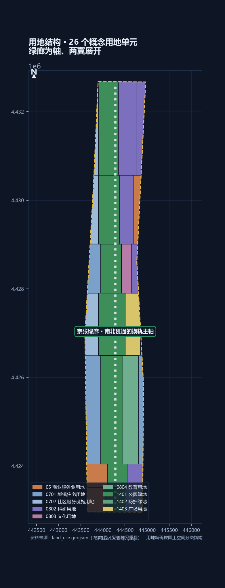
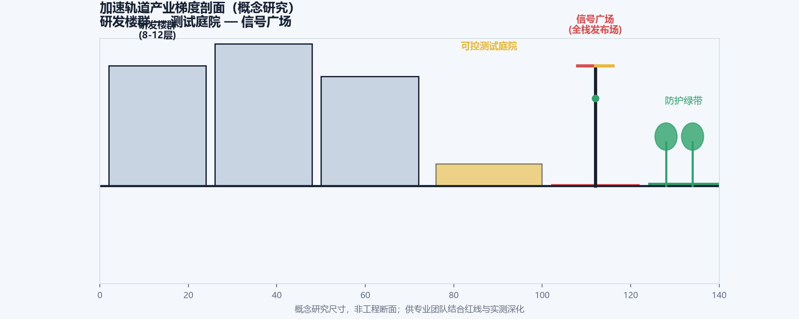
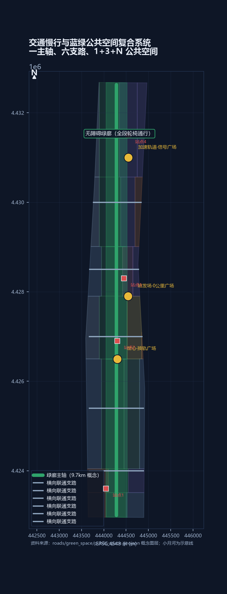
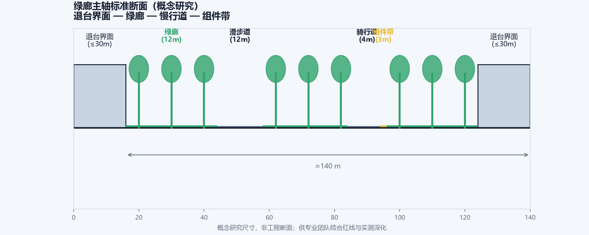
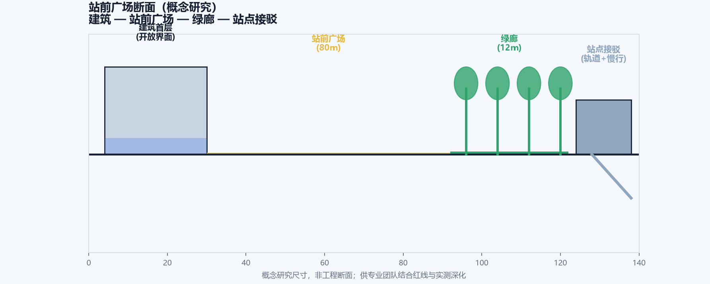
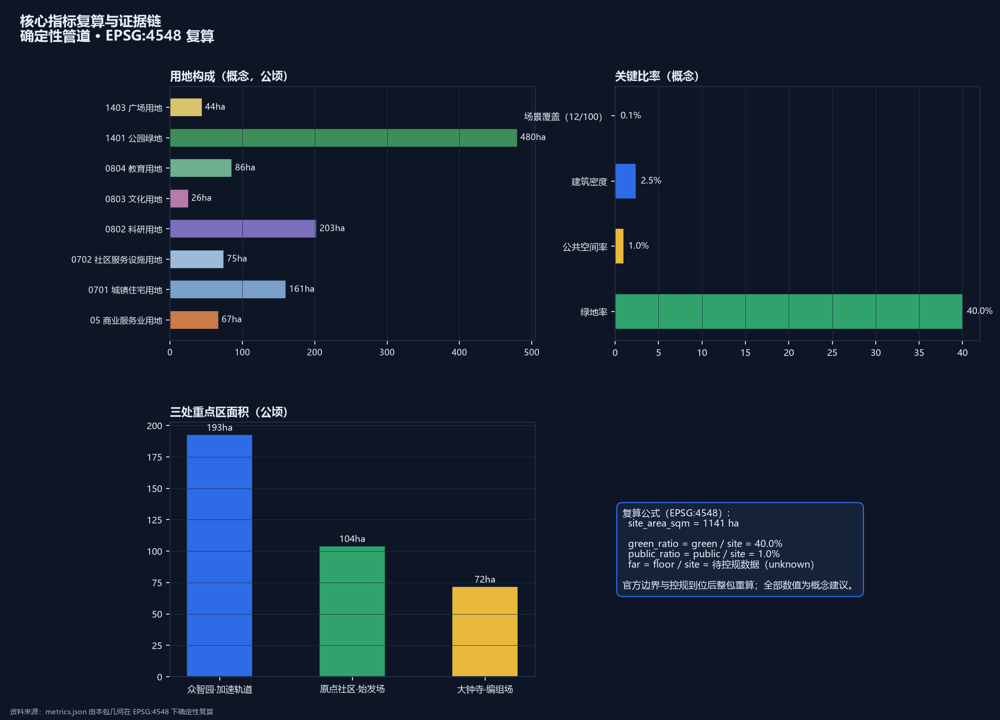
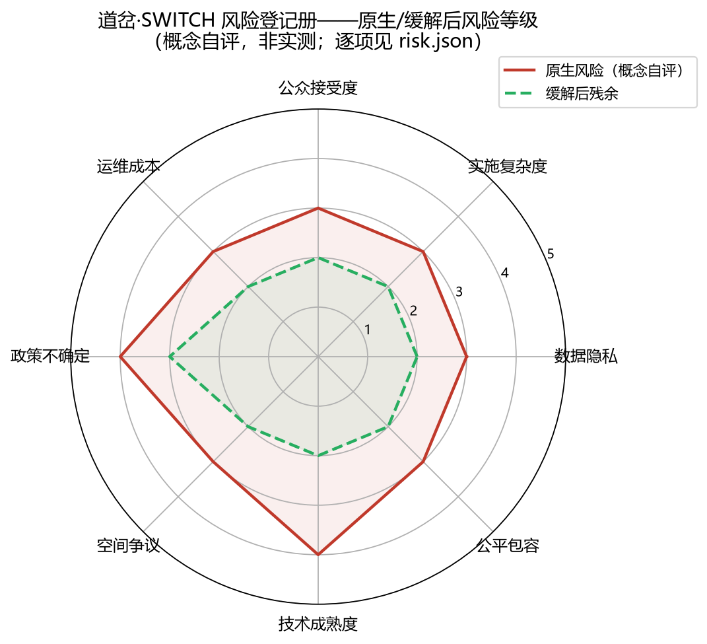

道岔·SWITCH 2.0——把京张 AI 创新带做成可暂停的公共试验线
京张走廊不需要再增加一座孤立的 AI 园区，而需要一条能让实验进入日常、也能在公共利益受损时停下来的试验线。SWITCH 2.0 以一条南北公共主脊、三处重点工场、两条协同接口和四道放行门，把 12 个概念场景、5 项慢变量、18 项更新项目和 45 项可复算指标组织成一个可试、可审、可退的城市设计方案。所有空间边界仍为临时约束，全部实施内容均为概念建议。
道岔·SWITCH 2.0
一条可以暂停的公共试验线
1909 年，詹天佑用“人”字形展线让列车换坡；今天，京张走廊面对的是另一种坡度：AI 迭代很快，树荫、无障碍、街区生计和公众信任很慢。前一版方案把“道岔”同时写成品牌、空间和治理符号，但信息过多，读者不容易判断先做什么、谁来做、凭什么继续。本版重新收束成一句话：
不再增加一座孤立的 AI 园区，而是把已建成的京张城市走廊变成一条可暂停的公共试验线。
“可暂停”不是口号，而是四个必须同时成立的条件：场景有人工替代，数据有边界，受影响的人能提出异议，项目有可拆除的退出路径。技术可以快试，空间和公共服务不能被一次成功演示永久锁定 来源 来源 标准。

读图方法。 这不是一张招商总平面：黄铜色主脊表示公共可达线，三枚深色节点表示“测量—协商—兑现”三个工场，细线表示可以协商的东西向接口。淡色边界是临时约束，不是红线。
先回答评审的五个问题
| 问题 | 本版的直接回答 | 第一份可核验证据 |
|---|---|---|
| 解决什么问题 | 把科研、产业、生活和遗产之间的断裂，转成一条有人工兜底的公共试验线 | 三场两翼空间链、12 张场景卡 |
| 空间上改变什么 | 连续主脊、三处工场、三条横向接口和五处慢变量地标 | geometry/land_use.geojson、key_areas.geojson |
| 谁负责继续 | 试点运营方负责日常，专业复核组负责放行，受影响群体负责异议 | switch-protocol.json、年度总账 |
| 何时停止 | 红牌暂停、人工接管、冻结数据；连续失败则退役并拆除可逆构件 | 协议状态机与红牌演练记录 |
| 哪些不声称 | 不声称正式红线、权属、容积率、工程线位、现状绩效或政府承诺 | assumptions.json、metrics.json |
证据边界
公告和任务书可以支持三层范围、三处重点区、成果深度和六项任务；临时 GeoJSON 可以支持相对关系、概念生成和确定性复算；它们都不能替代正式红线、控规图则、权属普查、现状测绘或审批。总体临时范围复算约 11,412,825 平方米，与公告约 11.4 平方公里的差异率约 0.1125% 来源 来源 指标。
该差异已登记，不被隐藏；官方边界到位后触发整包重算 [assumption:A-BOUNDARY-001]。
本稿中的“地标、场景、项目、资金类别、责任主体”均为概念设计或深化接口；没有现场访谈、沿线慢变量基线和正式权属资料的地方，统一写成待测、待核或待授权。留白是质量控制，不是缺页 深度。
一、设计依据与资料清单
设计依据分成四层：公告确定项目边界，智能体任务书确定要回答的问题，国家及地方规范确定专业底线，公开报道只提供历史和产业语境。四层不互相越权。
| 资料层 | 本包采用它做什么 | 明确不做什么 |
|---|---|---|
| 公告与任务书 | 组织三层范围、三区两翼、六项 agent 交付 | 不把文字四至扩写成精确多边形 |
| 规划、用地、无障碍与 AI 规范 | 约束设计深度、分类、人工服务和数据边界 | 不代替项目审批和工程审查 |
| 京张铁路、公园、站房等公开史料 | 建立文化叙事和可核验的历史锚点 | 不把历史报道当作现状调查 |
| 本包 GeoJSON、指标和协议 | 生成概念关系、场景流程和可复算图件 | 不冒充测绘、容量或绩效数据 |
方案的正式读法是“设计建议 + 证据接口”。每项建议都应能回答四件事：挂在哪个空间、服务谁、由谁复核、失败后怎样撤回 标准 标准 来源。
二、三层范围工作框架
三个尺度承担不同责任，而不是把一个总图放大三次。
| 尺度 | 任务 | 交付物 |
|---|---|---|
| 43.6 平方公里统筹研究范围 | 统一区域协同语言，让科学城、社区、园区和京津冀接口可以比较 | 方法包、区域接口、年度公共账本格式 |
| 约 11.4 平方公里总体设计范围 | 把“三区两翼”变成连续公共网络 | 主脊、绿蓝网络、用地关系和交通接口 |
| 约 368.4 公顷重点范围 | 让场景真正落到可观察的工场 | 众智园、AI 原点、大钟寺三处试点单元 |

三处重点区不是三个孤立园区，而是一个最小闭环：众智园负责把数据测准，AI 原点负责让分歧被听见，大钟寺负责检查承诺有没有进入日常生活 空间数据 空间数据。
任何场景都不能从实验室直接跳到全带扩张；重点区顺序是先测量、再协商、后兑现 空间数据 深度。
三、统筹研究范围产业与未来城市研究
三场两翼：把“换轨”变成可操作接口
SWITCH 2.0 的空间骨架是“一条主脊、三座工场、两条协同侧线”：
| 空间角色 | 重点区/接口 | 解决的转化问题 | 不承诺的内容 |
|---|---|---|---|
| 始发场 | AI 原点社区 | 让创业者、居民和高校从问题开始发车 | 不承诺入驻企业和招商结果 |
| 加速轨道 | 众智园 | 做基线、沙箱、治理和低风险产业测试 | 不承诺算力、订单和产品落地 |
| 编组场 | 大钟寺 AI 产业集聚区 | 让服务、消费、人工窗口和小店共同检验 | 不承诺业态替换或商业回报 |
| 东侧服务翼 | 中关村科技服务接口 | 提供标准、法务、人才、资金和算力渠道 | 不指定具体机构或预算 |
| 西侧场景翼 | 小月河及社区接口 | 提供经授权的真实问题和公共服务反馈 | 不交换个人数据或非公开资料 |
三大定位由此落地：百年京张文化带负责记忆，都市 AI 生活体验带负责日常，AI 融合创新带负责试验。五大功能被改写成“研究、研发、场景、服务、治理”五个接口，接口可以断开、移交和复核，而不是一次性锁定功能分区 来源 来源。
品牌识别：让空间词汇可以被看见和带走
正式名称为道岔·SWITCH / THE SWITCH — Jing-Zhang AI Innovation Belt，公共口号为“为城市换轨 / Changing Tracks for the City”。Logo 把两段钢轨在岔心处分成“人”字和 Y 字：它同时指向京张工程记忆、AI 的切换动作和公共选择权。品牌系统不把文化遗产 Logo 与一带整体 Logo 混用，而是用同一套可复用的子词汇连接空间、场景和规则。
| 视觉层 | 设计方向 | 三个实际载体 | 边界 |
|---|---|---|---|
| 主识别 | 钢轨灰蓝 + 信号红黄绿 + 电光蓝；双语主标题和清晰的版本号 | 主脊入口、离线网页、年度总账封面 | 不使用未授权字体、企业商标或历史肖像 |
| 空间导视 | “里程—方向—状态—人工入口”四字段，静态信息优先 | 路线牌、信号柱、非数字反馈箱 | 不让屏幕占用无障碍净空 |
| 活动识别 | SWITCH CON、发车节、信号灯节、编组节、0 公里节共用信号灯节奏 | 海报、护照、荣誉墙和公共发布栏 | 活动名称是概念建议，不代表已获批日程 |
品牌的国际传播句不是“技术最快”，而是 A public test line that can pause. 任何传播图都同时标注“概念建议、临时边界、待专业确认”，使可识别度和证据纪律互相加强 来源 深度。
区域协同：输出尺子，不输出未经验证的结论
走廊位于中关村科学城内部，和北纬社区、未来科学城、怀柔科学城、经开区及京津冀之间的关系应是方法交换。向外输出四道放行门、慢变量基线模板、失败记录和年度总账格式；向内承接城市化测试问题和跨区域比较，不输出个人数据、审批结论或虚构合作 来源 来源。
| 协同对象 | 可以输出 | 可以承接 | 前置条件 |
|---|---|---|---|
| 北纬社区 | 社区场景清单、人工复核模板 | 居民使用问题 | 居民授权和社区协商 |
| 未来科学城 | 城市化测试问题单 | 共性技术城市验证 | 技术方与专业复核 |
| 怀柔科学城 | 科学成果公众转译方法 | 测量和校准问题 | 不接触非公开科研数据 |
| 经开区 | 工程化场景测试格式 | 制造工况复测需求 | 企业许可与安全审查 |
| 京津冀 | 去地点化方法包 | 跨城公共服务比较 | 数据脱敏、异地复核 |
全球案例：只借方法，不搬规模
| 案例 | 借鉴的机制 | SWITCH 的转译 | 明确不复制 |
|---|---|---|---|
| Barcelona Superblocks | 重新分配街道空间 | 三条横向接口优先步行和停留 | 封闭车行街区模式 |
| Paris 15-minute city | 近邻服务组织 | 一刻钟服务抽样框 | 自上而下功能指令 |
| Helsinki Kalasatama | 把居民时间纳入目标 | 场景耗时和人工服务指标 | 单一时间排名 |
| Amsterdam AMS Institute | living lab 组织 | 众智园基线实验室 | 固定预算与机构照搬 |
| Toronto Quayside | 数据治理教训 | G1 数据门和退出证明 | 密集传感网和数据托管承诺 |
| Singapore Punggol | 园区—高校协同 | 服务翼的测试渠道 | 整片新建数字园区 |
| Seoul Digital Mayor | 公共指标持续可见 | 年度总账墙 | 实时驾驶舱式治理 |
这些案例提供提问方式，不提供本地化结论 来源 深度。
八类生态要素：从名词变成可申请、可记录、可退出的接口
agent.2 的生态图谱不写企业名单，而写每类要素进入空间后的第一份公共证据。它回答“谁可能提供、在哪里发生、怎样留下记录、什么时候归还”，因此可以被专业团队替换主体而不改变方法。
| 要素 | 本地空间接口 | 第一份公共证据 | 退出护栏 |
|---|---|---|---|
| 土地与界面 | 三处重点区、绿廊和站前首层 | 权属/边界清单、界面开放记录 | 未清权不落位、不声称可供地 |
| 空间 | 三场公共首层与可逆组件 | 开放时段、断点清单、维护记录 | 无许可或无障碍条件不安装 |
| 产业 | SW-04、SW-05、SW-11 沙箱测试 | 测试协议、失效分类、退出单 | 不承诺入驻、采购或招商 |
| 资金与政策 | 项目库和政策工具的适用性检索 | 适用性核对表、程序结果 | 不把申报路径写成获批资金 |
| 人才 | 原点孵化、机车库课程、开发者社区 | 角色责任、课程记录、贡献记录 | 责任无人接手，场景不续期 |
| 算力 | 众智园端侧测试和治理实验室插口 | 容量/能耗评估、窗口使用记录 | 窗口到期释放，未评估不扩容 |
| 数据 | 合成/脱敏数据、字段字典和删除链 | 审查摘要、删除证明、版本差异 | 红牌或 T5 后停止访问并删除 |
| 场景 | 12 张卡、T0–T5 状态机和年度总账 | 场景卡、演练记录、公共复盘 | 没有人工兜底就退回概念层 |
首年执行只采用三件套：申请写清对象、许可、责任和数据；记录留下版本、人工复核和公众产物；退出释放资源、撤除组件并公开差异。这里的“生态”是可审计的协作接口，不是产业规模或政府承诺 来源 来源 深度。
四、总体设计范围城市更新与控规深度城市设计
空间结构：一条主脊、三处工场、三条接口
主脊沿京张铁路遗址公园和既有公共空间组织，不把“加速”理解成大拆大建。三处工场分别承担测量、协商、兑现；三条东西接口分别修补校园—社区、轨道—公园、产业—生活的断点。所有新介入优先使用干式、轻量、可拆组件 空间数据 空间数据 深度。
决策链：问题—动作—责任—证据—退出
| 城市问题 | 空间动作 | 日常责任 | 放行证据 | 失败后的动作 |
|---|---|---|---|---|
| 绿廊连续但体验断裂 | 树荫样方、雨水观察窗、慢行修补 | 园林/街道/运营团队 | SV-01、SV-02 复测 | 补绿、修补，暂停扩展 |
| 推荐路线替代真实选择 | 共绘桌、静态标识、人工窗口 | 社区/无障碍复核组 | SV-03、异议记录 | 冻结推荐，人工接管 |
| AI 流量挤压小店和服务 | 兑现工场、商户观察、等价人工路径 | 街道/商户/服务点 | SV-04、服务纠错单 | 缩小场景，回到人工 |
| 儿童路线只剩算法答案 | 分段陪测、照护者复盘 | 学校/照护者/安全员 | SV-05、安全记录 | 立即停测，转人工陪同 |

场景规（Scenario-Code）是辅助决策语言：它记录场景开放度、公共服务冗余、数据边界和退役难度，不替代容积率、建筑高度、密度、退线、交通和工程审查。真正的规划结论仍须在正式边界和控规条件到位后重算 标准 [assumption:A-CONTROLS-003]。
场景规把“传统规划回答能建多少”扩展为“城市能够安全承载多少创新交往”，但不制造新的法定指标。三档只表示开放和治理责任的不同：
| 档位 | 空间类型 | 可承载的活动 | 必须先有的证据 |
|---|---|---|---|
| S1 开放体验区 | 岔心、绿廊、站前公共空间 | 文化导览、公共艺术、低风险路线体验 | 静态导视、人工入口、无障碍复核 |
| S2 预约协作区 | AI 原点、大钟寺首层 | 教育、创业发车、服务测试和预约体验 | 责任人、异议台账、人工服务 |
| S3 受控测试区 | 众智园实验室和数据沙箱 | 模型、隐私盾和产业互操作测试 | G1 数据门、独立审查、退出证明 |
场景容量只作概念比较，正式专业深化仍以控规、权属、消防、交通和实测条件为准 深度 深度。
五、重点区域详细设计

1. 众智园：把数字测准
这里先建“开放基线实验室”，再谈产业加速。土壤观察窗、树冠样方、人工复核厅和失败样本园组成最小单元。传感器和人工剖面必须并列记录；两者冲突时，不得挑选较好看的结果申请扩点。产业测试只在沙箱中发生，原始数据权限、保存期限和删除证明在 G1 前冻结 空间数据。
2. AI 原点：让异议有地方停下来
AI 原点的首层不是展示厅，而是共享接口：路线共绘桌、无障碍审计台、慢变量阅览室、非数字反馈箱和人工求助窗口。儿童、轮椅使用者、骑手、照护者和沿街工作人员可以对同一条路线提出不同意见，意见、修订和未解决问题一起留档。AI 原点社区的公开产业语境可以作为背景，但不写成已获授权的运营主体 来源 空间数据。
3. 大钟寺：检查承诺有没有兑现
大钟寺把“上线”翻译成日常问题：人工窗口还在不在，排队时间是否真的减少，小店是否还能留下，树下座位是否有人使用。总账墙、服务申诉台、年度陪审桌和小规模兑现市集共同组成兑现工场。保留项目和退出项目同屏展示，退出不是污点，而是公共系统有能力止损的证据 空间数据。
六、AI 创新生态、人才画像与 AI+ 场景
六项 agent 任务如何落到一条链
| 任务 | 新版交付 | 可复核位置 |
|---|---|---|
| agent.1 总体概念 | SWITCH 命名、三场两翼、场景规、品牌方向 | 一、三、四章与总图 |
| agent.2 生态体系 | 7 个案例、8 类生态要素、5 个区域接口 | 三章及 sources.json |
| agent.3 AI+ 场景 | 12 张卡、3 项产业测试、6 类画像、人工兜底 | 本章与 switch-protocol.json |
| agent.4 公共空间 | 主脊、横向缝合、5 个地标、10 个可逆组件 | 八、九章与图层 |
| agent.5 文化融合 | 铁路史料、国际可读导视、清权前置 | 一、三、九、十二章 |
| agent.6 长期运营 | 四季节奏、年度总账、接力路径、退出机制 | 十章与 validation-ledger.json |
六类使用者：公共利益先于技术便利
| 使用者 | 得到什么 | 不承担什么代价 | 参与证据 |
|---|---|---|---|
| 通勤者和步行者 | 连续、可离线的路线和人工求助 | 不被迫使用 App | 断点图、通行复测 |
| 轮椅使用者和照护者 | 可共测的无障碍路线 | 不被要求提供非必要身份数据 | 审计记录、修复清单 |
| 儿童和照护者 | 分段陪测和可随时退出的路线 | 不记录可识别轨迹 | 陪测复盘、停止记录 |
| 沿街商户 | 等价人工服务和影响申诉 | 不以参与换取租金、信用或招商资格 | 街区级聚合账本 |
| 开发者与学生 | 沙箱、课程和贡献荣誉 | 不以开源贡献换取个人数据 | 课程、贡献和评选规则 |
| 老年人和非数字用户 | 真人窗口、纸面导视和非数字反馈 | 不因不用 AI 被降级服务 | 服务统计、纠错单 |
十二张场景卡：用场景解释空间，不用场景替代规划
每张卡都登记对象、位置、许可、数据、人工复核、首份公共产物和退出条件；阈值在首年基线后冻结，当前不能写成已运行结果。
| 卡片 | 场景与位置 | 第一份公共产物 | 红牌条件 |
|---|---|---|---|
| SW-01 | 岔心·换轨艺术广场 | 策展记录、投诉处理单 | 安全事件、投诉持续上升 |
| SW-02 | 信号灯·AI 治理可视化／众智园 | 口径表、核对记录 | 状态不可解释、数据越界 |
| SW-03 | 时刻表·AI 出行调度／全带绿廊 | 活动复盘、断点图 | 人工干预超冻结线、无障碍投诉未闭合 |
| SW-04 | 扳道房·人工接管测试场／众智园 | 演练报告、责任签名 | 接管事故、红牌后数据未冻结 |
| SW-05 | 编组场·企业数据沙箱／大钟寺 | 数据字典、审计摘要、退出单 | 原始数据越界、删除无法证明 |
| SW-06 | 始发场·创业发车仪式／AI 原点 | 评审规则、申诉处理 | 人工复核缺席、利益冲突 |
| SW-07 | 里程桩·AI 文化导览／历史侧线 | 内容审校、纠错记录 | 史实错误、版权不清、必须定位个人 |
| SW-08 | 机车库·AI 教育实验室／AI 原点 | 课程记录、教师复盘 | 教师缺席、儿童数据越界 |
| SW-09 | 侧线·场景快闪／西侧线 | 许可单、巡检表、撤场记录 | 许可到期未撤、阻塞通行 |
| SW-10 | 检票口·AI 政务服务／大钟寺 | 服务统计、人工路径证明 | 人工窗口缩减、错误未纠正 |
| SW-11 | 隧道·隐私盾测试场／众智园 | 测试摘要、删除证明 | 泄漏、审计不可复现 |
| SW-12 | 终点站·AI 荣誉殿堂／主脊 | 评选规则、异议与修订清单 | 贡献不可追溯、异议未回应 |
其中 SW-04、SW-05、SW-11 是产业测试，但三者都先过人工、安全和数据门；“产业支持”因此表现为可审计的试验接口，而不是招商口号 深度 [assumption:A-SCENARIO-005]。
五项慢变量和四道放行门
场景是快轨，慢变量是底盘。SV-01 树冠与遮荫、SV-02 雨后渗透、SV-03 无障碍连续性、SV-04 街区业态存续、SV-05 儿童独立出行，全部先测后设目标。G1 数据与安全、G2 人工服务与可达性、G3 受影响群体复核、G4 年度慢变量健康度，任何一门不通过，场景只能保持黄灯或退役。
| 慢变量 | 首年测量 | HOLD 后动作 |
|---|---|---|
| SV-01 树冠与遮荫 | 南中北固定样方、季度复测、夏季现场抽样 | 补绿和修复，不扩展活动 |
| SV-02 渗透与恢复 | 雨后传感器 + 人工剖面，小月河作对照 | 点位冻结，回到人工核验 |
| SV-03 无障碍连续性 | 三条接口共测路线，每月复测 | 暂停路线推荐，先修断点 |
| SV-04 业态存续 | 自愿商户样本年度汇总 | 不发布单店信息，回到协商 |
| SV-05 儿童出行 | 学校—社区分段陪测、照护者复盘 | 任一安全事件即停测转人工 |
完整样本原则、频率、异常处理、公开字段和停止条件保存在 visual/assets/validation-ledger.json；当前状态是待测，不是现状评分 指标 深度。
七、用地、建筑规模与拆改留方案
提交几何提供 26 个概念用地单元、建筑基底和公共空间关系，用于验证覆盖、相邻和图件表达；它不决定任何真实建筑的命运。更新顺序固定为“保留—低扰动修缮—可逆嵌入—专业论证后再决定拆改”。法定容积率、高度、密度、退线、权属、市政容量全部保持待补 空间数据 指标 [assumption:A-CONTROLS-003]。
建筑不是 AI 的容器。首层优先安排人工服务、公共卫生间、无障碍连续入口、非数字反馈和可撤回展陈；上层才讨论孵化、教育和企业服务。每个新构件必须有安装、维护、授权、拆除五个字段，否则不进入首开清单 标准。
八、交通、轨道、市政与公共服务设施

交通设计只给接口，不给工程结论：主脊保持南北连续，三条东西接口优先修复步行、轮椅、自行车和公交接驳的断点；导视同时提供静态、无电和真人三种路径。任何智能调度都必须保留固定时刻表和人工预案 空间数据 标准。


市政、消防、轨道接口、桥隧和地下空间未获得清权资料，图件中的断面宽度和设备仅用于说明共享关系。正式深化应先做现状断面、产权、容量和安全评估，之后再进入可行性论证 深度 深度。
九、蓝绿空间、公共空间与城市风貌
绿地、公共空间和建筑比例是提交几何的概念量，不是法定指标；45 项指标的公式、来源、置信度和待补状态登记于 metrics.json。空间品质用身体可感的证据衡量：夏季树荫、雨后恢复、轮椅绕行、儿童路线和小店存续 指标 指标。
五处慢变量地标
| 地标 | 锚点 | 公众读到的不是“科技奇观”，而是 |
|---|---|---|
| L1 清华园车站遗址 | AI 原点一侧 | 历史站房与詹天佑题匾，速度曾经如何向坡度低头 |
| L2 零号基线碑 | 众智园北端 | 测量方法、失败记录和当前未知 |
| L3 异议站台 | AI 原点 | 少数意见、修订版本和未决问题 |
| L4 大钟寺十年总账墙 | 大钟寺 | 留下、修改、退出的项目同屏可见 |
| L5 放行门信号群 | 主脊四道门 | 一个项目为什么可以变快、何时必须停下 |
文保落位、建设控制地带、灯光和导视须在资料清权后深化，不在本包绘制文保边界或作合规结论 来源 深度。
可逆组件库
| 组件 | 适用位置 | 对应证据 |
|---|---|---|
| 零号基线碑 | 主脊入口 | G1、五项 SV |
| 土壤观察窗 | 众智园、雨水花园 | SV-02 |
| 树冠复测样方 | 绿廊 | SV-01 |
| 慢变量路线标记 | 主脊和横向接口 | SV-03、SV-05 |
| 儿童陪测路线牌 | 学校—社区路线 | SV-05 |
| 异议站台 | AI 原点 | G3 |
| 非数字反馈箱 | 原点、大钟寺 | G2、G3 |
| 年度总账发布栏 | 大钟寺 | G4 |
| 人工窗口服务点 | 大钟寺及社区站 | SV-04 |
| 可逆铺装与设施模块 | 12 个场景节点 | 退出门 |
所有组件是参考规格，不是施工图；撤除后应恢复原界面 深度。
荣誉展示系统：把贡献、证据和退出一起记住
开发者荣耀墙、数字护照和 L5 放行门信号群不按流量或融资额排名，而按可复现方法、公共贡献和及时退出记录展示。每一项荣誉都经过“贡献自证—委员会复核—公众公示—异议修订”四步；贡献被撤回或版权边界变化时，铭牌和数字记录同步下线并保留版本差异。
| 荣誉对象 | 展示内容 | 复核证据 | 可撤回条件 |
|---|---|---|---|
| 方法贡献 | 可复用代码、协议或测量方法 | 版本、许可证、复现实验 | 来源不清或无法复现 |
| 公共贡献 | 修复断点、人工服务、教育或文化纠错 | 责任记录、参与者复盘 | 影响被夸大或异议未回应 |
| 及时退出 | 主动暂停、删除数据、拆除组件 | 红牌记录、删除证明、恢复照片 | 退出链缺失或再次越权 |
这套规则把 agent.4 的“荣誉展示”从装饰墙变成可审计的公共知识资产；它仍是概念机制，不是既定评奖活动 来源 深度。
十、更新项目清单、实施政策与分期计划
六个启动包，覆盖十八项概念项目
为了不让 18 项目变成一张无优先级清单，本版把它们编成六个启动包。每个包都有一个首年动作、一个放行条件和一个退出方式。
| 启动包 | 包含项目 | 首年动作 | 放行条件 |
|---|---|---|---|
| A 基线包 | 1、2、6 | 样方、观察窗、失败样本园 | G1 数据边界和授权 |
| B 接口包 | 5、12、14 | 三条断点路线共测 | G2 可达和人工预案 |
| C 原点包 | 3、7、9 | 首层共享界面与教育试课 | G3 异议闭合 |
| D 兑现包 | 8、13、16 | 人工服务、总账墙、限时活动 | G3 服务等价 |
| E 文化包 | 10、11、17、18 | 清权、内容审校、可撤导视原型 | 文保和版权确认 |
| F 产业包 | 4、15 | 沙箱、开发者贡献原型 | G1/G4 数据与公共价值 |
18 项概念项目的原清单仍保留在项目台账中：岔心广场、编组场体验馆、0 公里广场、信号广场、南北绿廊、人才公寓、商务服务、机车库实验室、荣耀墙、AR 导览、站点接驳、游客中心、无障碍整治、数字护照、SWITCH CON、历史导视和朝圣路线照明。它们的空间、概念规模、依赖条件、责任类型和验收口径登记于 geometry/phasing.geojson、assumptions.json 和 compliance_matrix.json，本包不把它们写成已立项项目 空间数据 深度。
四季运营与接力
春季定样点和授权，夏季做路线共测和红牌演练，秋季做沙箱、商户与服务复盘，冬季发布年度总账。运营权按接力设计：首任运营团队负责开账和招募，街道、高校、社区和专业团队按项目加入；连续两年不能留下可下载公共产物的活动停办，没人接手的设施按可逆构件拆除 深度。
首开只做 100 米示范段、一个红牌撤回演练和三个无永久工程先导场景（SW-01、SW-05、SW-09）。不通过就缩小或撤场，不以招商、流量或活动照片替代验收。四季活动、年度总账和责任字段的机器记录见 validation-ledger.json 来源。
国际传播与转化路径
对外传播不把“AI 朝圣地”写成景点排名，而讲一条任何城市都能理解的故事：历史铁路教城市如何换轨，今天的 AI 必须学会在公共利益受损时停下。 年度《道岔宣言》用中英双语发布三件可复用资产：一张主脊与地标图、一份四门协议、一页年度保留/修改/退出总账；每次发布同时写明提交、评审、合并和已实施之间的状态差异。
转化路径按角色而不是招商漏斗组织：
| 阶段 | 对象 | 体验/动作 | 可留下的资产 | 下一步条件 |
|---|---|---|---|---|
| 走读 | 居民、游客、学生 | 沿主脊读地标和静态规则 | 纠错、反馈、路线断点 | 愿意参与且不交出非必要数据 |
| 共测 | 照护者、商户、开发者 | 参与路线、服务或沙箱复核 | 共测记录、修复单、版本差异 | G2/G3 通过 |
| 试验 | 企业、高校、运营者 | 在受控场景中申请测试 | 审计摘要、删除证明、退出单 | G1/G4 通过 |
| 贡献 | 专业团队、传播伙伴 | 复用方法、维护组件、发布案例 | 可复用协议、课程、年度总账 | 许可证、责任和事实状态清楚 |
这条路径把“体验—参与—试验—贡献”接到开发者社区、场景开放和国际传播，不承诺企业落地、政策资金或活动效果 来源 [assumption:A-SCENARIO-005] 深度。
十一、指标体系、面积复算与合规矩阵
指标分成三类：
1. 可复算设计量：临时范围、用地覆盖、概念绿地、公共空间、场景节点、重点区和建筑关系，由 GeoJSON 在 EPSG:4548 下确定性计算。 2. 背景参照量：公开资料中的公园、产业和历史数据，只校准语境，不代表本项目绩效。 3. 必须首年实测量：五项慢变量、服务等价、商户存续、儿童路线和人工接管结果，当前一律 unknown。
45 项指标的完整登记和公式以 metrics.json 为准；三处重点区、12 张场景卡、5 处地标、18 项项目和六项 agent 任务分别由任务矩阵、标准矩阵和设计深度矩阵交叉核验。正文解释“为什么”，结构化文件证明“是否完整” 指标 指标 深度。

官方红线、控规图则或现状底数每到位一批，按确定性管道整包复算，在 changelog.md 公开差异表；不以局部修补掩盖边界变化 [assumption:A-BOUNDARY-001]。
十二、风险、版权与合规说明
风险分为数据隐私、文保、权属、公众信任、工程可行性、边界误读、运营接力和版权八类，登记于 risk.json。本版的控制逻辑只有三条：
- 不使用非公开空间资料、未授权个人数据或秘密地图；涉及儿童、商户和无障碍参与时，坚持自愿、最小化、去标识、人工复核和可退出。
- 不把概念边界、插画、产业统计或场景演示写成官方审批、现状事实或政府承诺；AI 不替代规划、法律、工程和公共决策。
- 不把“红牌”写成装饰：暂停后冻结数据、保留人工服务、公开责任签名，连续失败进入退役；版权不清的史料、字体、图片或品牌不进入发布包。

正文、双语翻译、图件和离线网页由 AI 辅助生成，几何与指标由确定性管道复算，具体生成与授权范围见 report/copyright_statement.md。本包采用 CC-BY-4.0；所有场景仍是概念建议，正式实施需另行取得授权和专业审查 来源 标准 深度。
十三、参考资料
1. 《百年京张 AI 创新带城市设计国际方案征集资格预审公告》，北京市规划和自然资源委员会海淀分局，2026 来源。 2. 《面向全球智能体开展“百年京张 AI 创新带城市设计开源征集”任务书摘录》，2026 来源。 3. 《城市设计管理办法》，住房和城乡建设部 标准。 4. 《城市、镇控制性详细规划编制审批办法》，住房和城乡建设部 标准。 5. 《国土空间调查、规划、用途管制用地用海分类指南》，自然资源部 标准。 6. 《中华人民共和国无障碍环境建设法》，全国人大常委会 标准。 7. 《生成式人工智能服务管理暂行办法》，国家网信办等七部门 标准。 8. 京张铁路、人字形展线、清华园车站、京张铁路遗址公园及区域产业公开资料，详见 sources.json 来源。
本版的交付原则是：先让人读懂，再让机器复核；先做可逆试验，再讨论长期固化；先把停止条件写出来，再谈 AI 可以走多快。